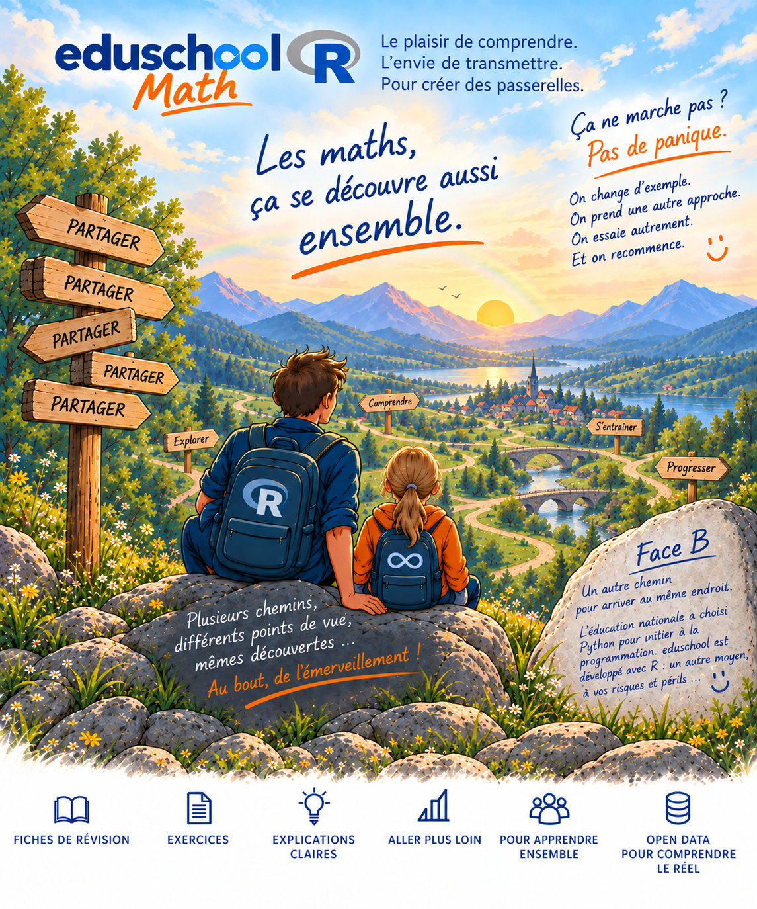

μάθημα — máthēma
Ce qui s’apprend. Ce qui s’étudie. Une connaissance.
Avant d’apprendre les mathématiques, faisons un pas de côté : prenons le temps de comprendre le mot lui-même.
Mathématiques vient du grec máthēma (μάθημα) : « ce qui s’apprend, ce qui s’étudie ».
Celui-là, on peut même l’apprendre par cœur. ❤️
Les maths ne commencent peut-être pas par un calcul. Elles commencent par l’envie de comprendre.
Comprendre un parcours scolaire →
J’utilise R
install.packages("remotes")
remotes::install_github("gilles13/eduschool")
library(eduschool)